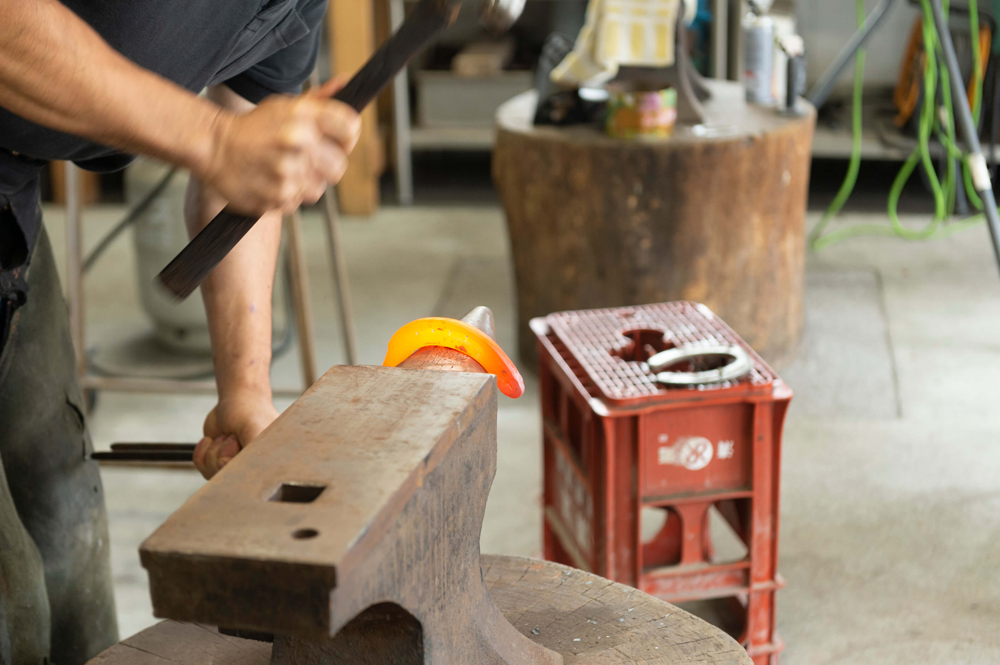
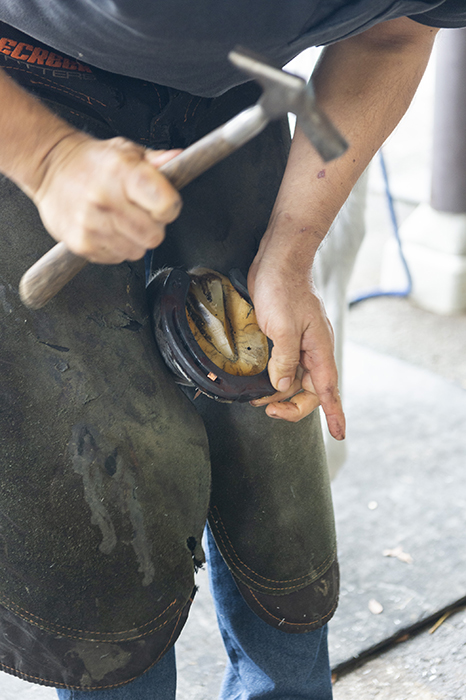

乗馬センターには蹄鉄（ていてつ）を
取り付けるところがあります。
蹄鉄は馬の靴のような役割を果たし、
蹄（＝馬のつめ）の病気や怪我などから守ります。
蹄が伸びたり、人が乗った重さで広がったり、
歩くことで蹄鉄が削れてしまうので、
定期的に蹄鉄を付け替えることが必要です。
乗馬センターの馬の場合、大体5週間
（競走馬は2～3週間）で蹄鉄を付け替えます。

01
まずは、蹄鉄を外す作業です。
ひっかけてある釘をたたいて伸ばし、
釘をまっすぐにすることで、
蹄鉄を外せるようになります。
02
蹄鉄を外した後は、蹄を削ります。
蹄の形や立ち方、歩き方は馬によって様々です。
その馬にとってベストな蹄の形・立ち方となるよう
丁寧に形を整えていきます。
蹄鉄を外した後は、蹄を削ります。
蹄の形や立ち方、歩き方は
馬によって様々です。
その馬にとってベストな
蹄の形・立ち方となるよう
丁寧に形を整えていきます。
03
蹄を整えた後は、
新しい蹄鉄をつくっていきます。
今回は同じ形をした既製品の
蹄鉄を熱して加工しやすくし、
その馬にあった蹄鉄の形にしていきます。
蹄を削っている際に大きさと形を把握し、
感覚で形を整えるところは
まさに職人芸です！

04
一度、整えた蹄鉄を馬の蹄に合わせる
焼き付けという作業を行います。
蹄は熱を通しにくいので熱くありません。
焼き付けをすることで蹄鉄との
密着性を高めます。
05
蹄鉄の形状が蹄に合っていることを
確認した後、
鉄のとがっているところを
安全のために削ります。

06
微調整終了後、蹄鉄をつけていきます。
蹄専用の釘である蹄釘（ていちょう）を
使って固定します。
蹄鉄に蹄釘を打ち込むことで
蹄の表面に出てきます。
表面に出てきた部分を短く切ってから
折り曲げることで蹄に固定しています。

07
付け替え完了!!
４つ蹄鉄をつけるのに1時間程度かかります。
馬が歩くことで蹄が広がることを考え、
蹄鉄は蹄より少し大きく合わせています。
左側が取り替える前、
右側が新しいものになります。
蹄がシャープになり、形もキレイです。